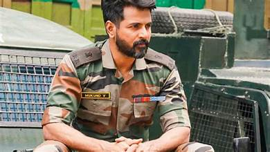
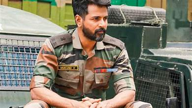
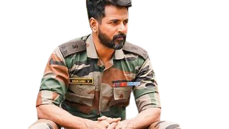
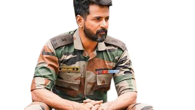

Amaran(The Immortal) is a 2024 Indian Tamil-language biographical action war film directed by Rajkumar Periasamy and produced by Raaj Kamal Films International, together with Sony Pictures Films India. The film stars Sivakarthikeyan as Major Mukund Varadarajan, alongside Sai Pallavi, Bhuvan Arora and Rahul Bose. It is an adaptation of the book series India's Most Fearless: True Stories of Modern Military Heroes by Shiv Aroor and Rahul Singh, which contains a segment based on Mukund. The film follows Indhu Rebecca Varghese, Mukund's wife, who narrates the life of the Major on her way to New Delhi to receive the Ashoka Chakra, which was awarded posthumously to Mukund. The film was officially announced in January 2022 under the tentative title Sivakarthikeyan 21, as it is his 21st film as a lead actor, and the official title was announced in February 2024. Principal photography commenced in May 2023 with a sporadic schedule at Kashmir along with a schedule in Chennai, which was again followed by another schedule held at Pondicherry, and wrapped after a year. The film has music composed by G. V. Prakash Kumar, cinematography handled by debutant CH Sai and editing by R. Kalaivanan.
 


 
